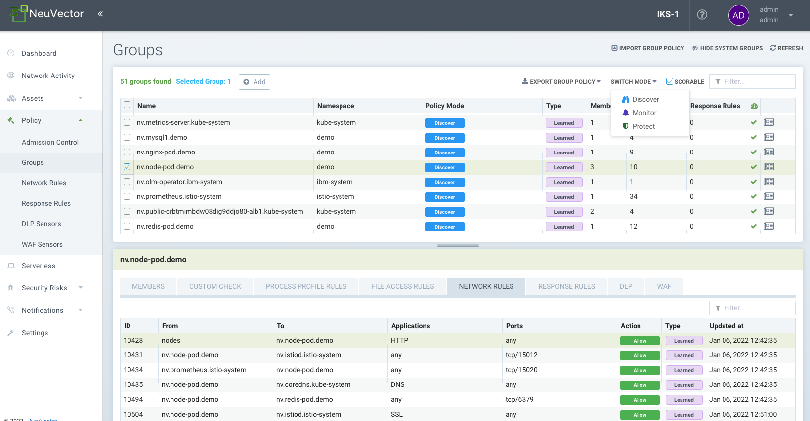

Groupes
Stratégie : Groupes
Ce menu est la zone clé pour visualiser et gérer les règles de sécurité et personnaliser les groupes à utiliser dans les règles. Il est également utilisé pour changer les modes des groupes entre Découvrir, Surveiller et Protéger. Les groupes de conteneurs peuvent avoir des règles de processus et de fichiers dans un mode différent de celui des règles réseau, comme décrit ici. Veuillez consulter les sections individuelles suivantes pour des explications sur les vérifications de conformité personnalisées, les règles réseau, les règles d’accès aux processus et aux fichiers et la détection DLP/WAF. Remarque : Les règles réseau peuvent être consultées dans le menu Groupes pour n’importe quel groupe, mais doivent être modifiées séparément dans le menu Règles Réseau.
SUSE® Security crée automatiquement des groupes à partir de vos applications en cours d’exécution. Ces groupes commencent par le préfixe 'nv.'. Vous pouvez également les ajouter manuellement en utilisant un CRD ou l’API REST et ils peuvent être créés dans n’importe quel mode, Découvrir, Surveiller ou Protéger. Les règles réseau et de réponse nécessitent ces définitions de groupe. Pour les groupes créés automatiquement ('groupes appris' commençant par 'nv'), SUSE® Security apprendra les règles réseau et de processus et les ajoutera en mode Découvrir. Les groupes personnalisés ne s’auto-apprendront pas et ne peupleront pas les règles. Remarque : les groupes 'nv.' commencent avec zero drift activé par défaut pour les protections des processus et des fichiers.

Il est pratique de voir des groupes de conteneurs et d’appliquer des règles à chaque groupe. SUSE® Security crée une liste de groupes basée sur les images de conteneurs. Par exemple, tous les conteneurs démarrés à partir d’une image Wordpress seront dans le même groupe. Les règles sont automatiquement créées et appliquées au groupe de conteneurs.
L’écran des Groupes affiche également une icône 'Scorable' en haut à droite, et un groupe appris peut être sélectionné et la case à cocher Scorable activée ou désactivée. Cela contrôle quels conteneurs sont utilisés pour calculer le score de risque de sécurité dans le tableau de bord. Voir Améliorer le score de risque de sécurité pour plus de détails.
L’écran des Groupes est également l’endroit où le fichier yaml CRD pour 'la stratégie de sécurité en tant que code' peut être importé et exporté. Sélectionnez un ou plusieurs groupes et cliquez sur le bouton Exporter la stratégie de groupe pour télécharger le fichier yaml. Voir la section CRD pour plus de détails sur l’utilisation des CRD. Important : Chaque groupe sélectionné ET tous les groupes liés par des règles réseau seront exportés (c’est-à-dire le groupe et tout autre groupe auquel il est connecté par les règles réseau de liste blanche).
Suppression automatique des groupes inutilisés
Les groupes appris (non réservés ou groupes personnalisés) peuvent être automatiquement supprimés par SUSE® Security s’il n’y a pas de membres (conteneurs) dans le groupe. La période de temps pour cela est configurable dans les Paramètres → Configuration.
Protection des hôtes - le groupe 'nodes'
SUSE® Security crée automatiquement un groupe appelé 'nodes' qui représente chaque nœud (hôte) dans le cluster. SUSE® Security fournit une surveillance de base automatisée des hôtes pour des processus suspects (tels que des analyses de ports, des shells inversés, etc.) et des escalades de privilèges. De plus, SUSE® Security apprendra le comportement des processus de chaque nœud pendant qu’il est en mode Découverte pour mettre sur liste blanche ces processus, de manière similaire à ce qui est fait avec les processus de conteneurs. La liste des règles de processus 'locale' (apprises) est une combinaison de tous les processus de tous les nœuds dans le cluster pendant le mode Découverte.
Les nœuds peuvent ensuite être mis en mode Surveillance ou Protection, où SUSE® Security alertera si un processus démarre en mode Surveillance, et bloquera ce processus en mode Protection.

Pour activer la protection des hôtes avec des règles de profil de processus, sélectionnez le groupe 'nodes' et examinez les processus appris sur le nœud. Personnalisez si nécessaire en ajoutant, supprimant ou modifiant des règles de processus. Puis passez le mode à Surveillance ou Protection.
|
Les violations de connexion réseau des règles affichées dans les Règles Réseau pour les nœuds ne sont jamais bloquées, même en mode Protection. Seules les violations de processus sont bloquées en mode Protection sur les nœuds. |
Groupes personnalisés
Les groupes peuvent être ajoutés manuellement en saisissant les critères pour le groupe. Remarque : Les groupes créés sur mesure n’ont pas de mode de Protection. C’est parce qu’ils peuvent contenir des conteneurs provenant de différents groupes sous-jacents, chacun pouvant être dans un mode différent, ce qui entraîne une confusion sur le comportement.
Les groupes peuvent être créés par :
-
Images
Sélectionnez les conteneurs par leurs noms d’image. Exemples : image=wordpress, image@redis
-
Noeuds
Sélectionnez les conteneurs par les nœuds sur lesquels ils s’exécutent. Exemples : node=ip-12-34-56-78.us-west-2
-
Conteneurs individuels
Sélectionnez les conteneurs par leurs noms d’instance. Exemples : conteneur=nodejs_1, conteneur@nodejs
-
Services
Sélectionnez les conteneurs par leurs services. Si un conteneur est déployé par Docker Compose, la valeur de son tag de service sera "nom_du_projet:nom_du_service" ; si un conteneur est déployé par le service en mode swarm de Docker, la valeur de son tag de service sera le nom du service swarm.
-
Libellés
Sélectionnez les conteneurs par leurs étiquettes. Exemples : com.docker.compose.project=wordpress, location@us-west
-
Adresses
Créez un groupe par nom DNS ou plages d’adresses IP. Exemples : adresse=www.google.com, adresse=10.1.0.1, adresse=10.1.0.0/24, adresse=10.1.0.1-10.1.0.25. Le nom DNS peut être n’importe quel nom résolvable. Les critères d’adresse n’acceptent pas l’opérateur !=. Voir ci-dessous pour des groupes d’adresses spéciaux d’hôte virtuel « vh ».
Un groupe peut être créé avec des types de critères mixtes, sauf le type 'adresse', qui ne peut pas être utilisé avec d’autres critères. Les critères mixtes imposent une opération ‘AND’ entre les critères, par exemple label service_type=data ET image=mysql. Les entrées multiples pour un ou plusieurs critères sont traitées comme un OU, par exemple address=google.com OU address=yahoo.com. Remarque : Pour aider à analyser les connexions d’entrée/sortie, une liste des IPs d’entrée et de sortie peut être téléchargée depuis le tableau de bord → section Détails d’entrée/sortie sous forme de rapport d’exposition.
La correspondance partielle est prise en charge pour les critères d’image, de nœud, de conteneur, de service et d’étiquette. Par exemple, image@redis sélectionne les conteneurs dont le nom d’image contient le sous-ensemble 'redis'; image^redis sélectionne les conteneurs dont le nom d’image commence par 'redis'.
Il n’est pas recommandé d’utiliser des critères d’adresse pour faire correspondre des IP internes ou des sous-réseaux, en particulier ceux protégés par des enforceurs, il est plutôt recommandé d’utiliser leurs métadonnées, telles que l’image, le service ou les étiquettes. Les cas d’utilisation typiques pour le groupe d’adresses sont de définir des stratégies entre des conteneurs gérés et des sous-réseaux IP externes, par exemple, des services fonctionnant sur Internet ou dans un autre centre de données. Le groupe d’adresses n’a pas de membres de groupe.
Les jokers '' peuvent être utilisés dans les critères, par exemple 'address=.google.com'. Pour une correspondance plus flexible, utilisez le tilde '~' pour indiquer qu’une correspondance regex est souhaitée. Par exemple, pour faire correspondre les étiquettes 'policy~public.*-ext1' pour l’étiquette policy.
|
Les caractères spéciaux utilisés après un égal '=' dans les critères peuvent ne pas correspondre correctement. Par exemple, le point '.' Dans 'policy=public.' ne correspondra pas correctement, et une correspondance regex devrait être utilisée à la place, comme 'policy~public.' |
Après avoir enregistré un nouveau groupe, SUSE® Security affichera les membres de ce groupe. Des règles peuvent ensuite être créées en utilisant ces groupes.
Politique réseau basée sur l’hôte virtuel ('vh')
Des groupes personnalisés peuvent prendre en charge des groupes d’adresses basés sur l’hôte virtuel. Cela permet un cas d’utilisation où deux adresses FQDN différentes sont résolues vers la même adresse IP, mais des règles différentes pour chaque FQDN doivent être appliquées. Un nouveau groupe personnalisé avec ‘address=vh:xxx.yyy’ peut être créé en utilisant l’indicateur ‘vh:’ pour activer cette protection. Une règle réseau peut alors utiliser le groupe personnalisé comme source ‘From’ basé sur le nom d’hôte virtuel (au lieu de l’adresse IP résolue) pour appliquer différentes règles aux hôtes virtuels.
Exemples de groupe personnalisé
Critères généraux
-
Pour sélectionner tous les conteneurs (l’un ou l’autre des exemples ci-dessous fonctionnera)
container=∗ service=∗
-
Pour sélectionner tous les conteneurs dans l’espace de noms « default » (l’espace de noms est pris en charge à partir de v2.2)
namespace=default
-
Pour sélectionner tous les conteneurs dont le nom de service commence par 'nginx'
service=nginx∗
-
Pour sélectionner tous les conteneurs dont le nom de service contient 'etcd'
service=∗etcd∗
-
Pour sélectionner tous les conteneurs dans l’espace de noms 'apache1' ou 'apache2' (appuyez sur entrée après chaque entrée)
namespace=apache1 namespace=apache2
-
Pour sélectionner tous les conteneurs qui ne sont PAS dans l’espace de noms 'apache1' et 'apache2' (appuyez sur entrée après chaque entrée)
namespace!=apache1 namespace!=apache2
-
Pour sélectionner tous les conteneurs dans l’espace de noms 'apache1~9'
namespace~apache[1-9]
Critères d’adresse IP :
-
Toutes les adresses IP externes
Veuillez utiliser le groupe par défaut ‘external’ dans les règles
-
Sous-réseau IP 10.0.0.0/8
address=10.0.0.0/8
-
Plage IP
address=10.0.0.0-10.0.0.15
-
dropbox.com et ses sous-domaines (appuyez sur entrée après chaque entrée)
address=dropbox.com address=*.dropbox.com